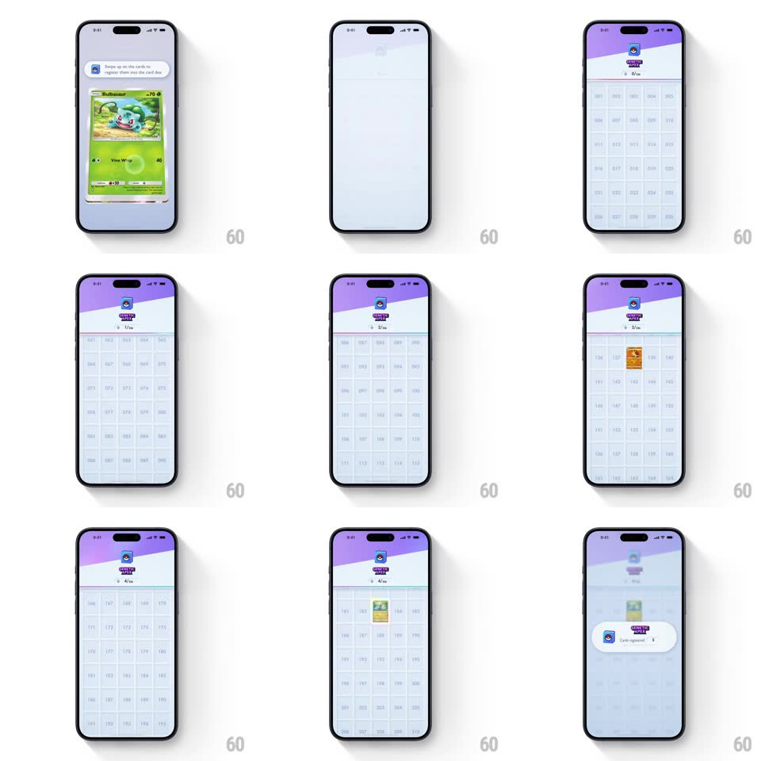

Media
Frame-by-frame

Rebuild this interaction 1:1: Pokemon TCG Pocket's dex registration - swiping up on a held card sends it flying into the Genetic Apex card dex, where it slots into its numbered grid cell with a pop and the registration counter ticks up.

Rebuild this interaction 1:1: Pokemon TCG Pocket's dex registration - swiping up on a held card sends it flying into the Genetic Apex card dex, where it slots into its numbered grid cell with a pop and the registration counter ticks up.
## Integration
Integration: stack-agnostic spec - springs given as stiffness/damping, timed motions as duration + curve; map every value to your framework and animation library of choice.
## Scene
Two states: the held-card view (Bulbasaur or Shellder full-screen under the bubble "Swipe up on the cards to register them into the card dex") and the dex view (purple Genetic Apex header, "0/30" style counter, a numbered grid of empty slots that fills in).
## Motion spec
Pattern: swipe-to-file gesture with slotting payoff.
- Touch the card: it lifts with the finger (scale 1.03, shadow deepens).
- Swipe up: the card follows the drag with slight rotation (rotateZ up to +/-10deg by horizontal offset); release past the threshold flings it upward (translateY to off-screen top, 350ms, ease-in, shrinking to scale 0.5).
- The view transitions to the dex (slide up, 300ms) and the thrown card re-enters from the top, arcing toward its numbered cell.
- Slotting: the card scales into its grid cell (scale 1.1 -> 1, spring ~450/20, 250ms) with a small white flash on the cell border and a dust-puff scale pulse.
- The header counter ticks up (1/30, 2/30...) with a number roll (100ms per increment) and the "Genetic Apex" badge does a small bounce per registration.
- A summary pill ("Cards registered: 3") slides up at the bottom when a batch completes.
## Calibration
- The throw and the dex landing read as one continuous flight - the card never vanishes.
- Cell fills are instant-on with a flash - the dex populates crisply.
## Reduced motion
Card fades into its cell; counter updates without roll.
## Don't miss
- Empty cells show their numbers in ghost grey - you can see exactly where each card belongs.
- The card lands with a slight overshoot past its cell and pulls back - springy, physical filing.